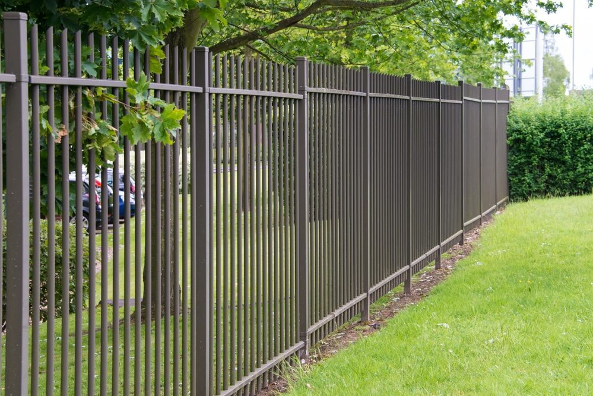
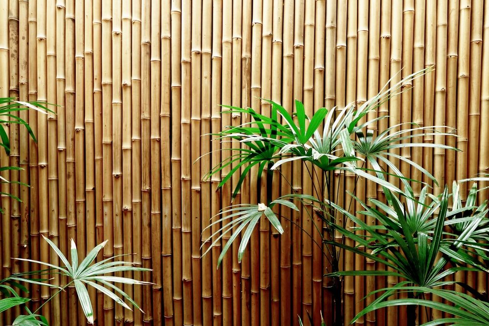

In This Guide
- Home fences fall into a handful of families: wood, vinyl, metal, chain link, composite, and masonry, plus less common natural options like bamboo.
- Each style trades off privacy, upkeep, and cost differently, and the trade-offs shift in humid, rainy Louisiana weather.
- Metal is a wide category. Aluminum, steel, and wrought iron look alike from the street but behave differently when the finish wears.
- Use this tour to shortlist two or three styles, then check height and material rules with your city or parish and your HOA.
A fence does three jobs at once: it marks the edge of your property, it sets how private the yard feels, and it shapes how the house looks from the street. The material you pick decides how well it does each one. This tour walks through the main types of home fences, what each looks like, what it asks of you over time, and where it tends to run into trouble.
The team at Big Easy Fence talks through these trade-offs with homeowners, and the best choice rarely comes down to looks alone. If you want a wider view of every material, start with our fence types overview.
Wood Fences
Wood is the classic choice, and it comes in more shapes than most people expect. Picket fences are low and friendly. Split-rail fences mark a boundary without blocking a view. Privacy fences use tight boards to screen the yard. Post-and-rail designs sit somewhere in between.
Wood can be painted or stained to match the house, which makes it easy to customize. The catch is upkeep. Painting, staining, and sealing protect the boards, and in Louisiana humidity that routine matters even more. Moisture and heavy rain lead to rot and warping, and termites are a real concern for any wood in the ground or near it. Our wood fence page covers how these fences are built and cared for.
Vinyl Fences
Vinyl fences are made from PVC. They come in picket, privacy, and semi-privacy styles, usually in white or tan, and they have a clean, uniform look. They do not rot, they are not a food source for termites, and they do not need painting. A wash with soap and water handles most dirt.
Vinyl has limits worth knowing. It usually costs more than wood at the start. Over time it can fade, and a hard impact can crack a panel. Repairs usually mean swapping a section rather than patching it. Our overview of vinyl fencing goes deeper on those trade-offs.
Metal Fences
Metal is a broad family, and the three main members behave differently. All of them are strong, and all of them depend on their finish to stay looking good.
Aluminum
Aluminum is lightweight and does not rust. It can still corrode or pit if the coating is damaged, so a good powder-coated finish matters. It comes in many heights and ornamental styles, and its clean lines suit modern and traditional homes alike.

Steel
Steel is strong and available in ornamental and tubular designs. Steel rusts once its protective finish fails, which is why galvanized and powder-coated finishes are standard. Touching up chips early keeps rust from spreading.
Wrought Iron
Wrought iron is the ornate, traditional option, known for scrollwork, spear tops, and a timeless look that fits older neighborhoods well. Iron rusts when paint wears through, so it needs periodic repainting. Learn more on our wrought iron fence page, or see the wider range on our metal fences page.
Chain Link Fences
Chain link is a woven steel wire fence with a protective coating. It is one of the more affordable ways to enclose a large area, it keeps pets in, and it does not block the view. Privacy slats or screening can be added if you want more cover.
It is not the prettiest option, so it is usually chosen for practical reasons: a big yard, a tight budget, or a fence that needs to be easy to install or take down. Damaged coating can rust, so check it after storm season. See our chain link fences page for more on styles and add-ons.
Composite, Bamboo, and Other Natural Looks
These options are less common, so they are worth a short look.
Composite
Composite fencing blends wood fibers with plastic. It gives a wood-like look without the painting and sealing, and it resists warping and pests. It usually costs more than wood, and some products fade over time, so ask how a given product handles sun and how replacement boards are matched.
Bamboo

Bamboo fencing comes as rolled, paneled, or split styles and works well as a privacy screen or decorative accent. It has a distinctive natural texture. It still needs sealing or staining to hold up outdoors, and it generally does not last as long as sturdier materials, especially in damp weather.
Stone, Brick, and Gabion
Masonry fences use natural stone, concrete block, or brick to create a solid, permanent barrier. They look substantial, they are very sturdy, and their mass can dampen some street noise. They are also among the most expensive and labor-intensive options, and they need a proper foundation, so they are a project for professionals.
Gabion fences are wire cages filled with stone or similar material. They have a bold, modern look and suit sloped or challenging sites. Installation is heavy work, and the look is not for everyone. Both masonry styles are worth considering only if you want a lasting statement piece and have the budget for it.
Choosing Between the Types
Narrow the list with four questions. How much privacy do you want? How much upkeep can you take on? What does your budget allow? And what do your city or parish and your HOA permit? Style and material rules vary from one address to the next, so confirm them before you fall for a specific look.
If you would rather decide by need than by material, our guide to the best type of fence for your home works from the goal backward. When you are ready to talk specifics, we can walk the property with you and give an estimate for the style that fits.
Want to See These Styles in Person?
Tell us which styles caught your eye and we will talk through how each one holds up on your property.